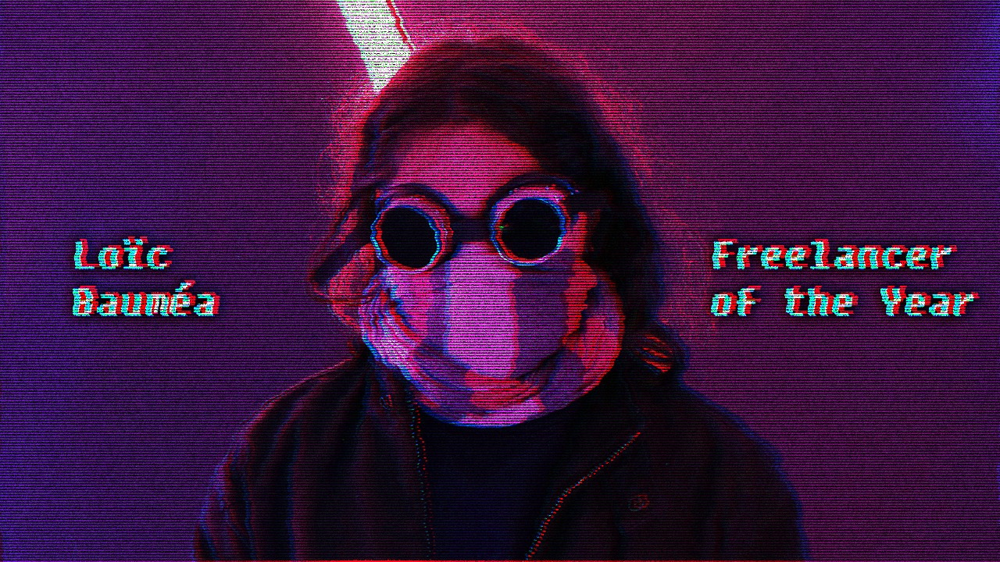

← all projects
Video Pitch
To participate to the Bright Red Sparks 2020 for the Freelancer of the Year category, I produced a 60 seconds video pitch. My intention was to make a video in a retrofuturistic style. I also took a photo to create a good-looking thumbnail image for Youtube. I have been nominated thanks to this video and made it to the final!
- 2020
- Video production, photography
- Premiere pro, Photoshop
see video

I edited the video with Premiere Pro. I manipulated the image with Photoshop and Photomosh.
Have a similar project in mind? Get in touch